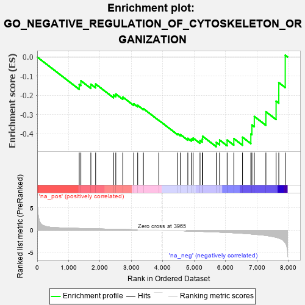

| | | Dataset | 7d |
| Phenotype | NoPhenotypeAvailable |
| Upregulated in class | na_neg |
| GeneSet | GO_NEGATIVE_REGULATION_OF_CYTOSKELETON_ORGANIZATION |
| Enrichment Score (ES) | -0.46737698 |
| Normalized Enrichment Score (NES) | -1.274153 |
| Nominal p-value | 0.16091955 |
| FDR q-value | 0.5013628 |
| FWER p-Value | 1.0 |
Table: GSEA Results Summary

Fig 1: Enrichment plot: GO_NEGATIVE_REGULATION_OF_CYTOSKELETON_ORGANIZATION
Profile of the Running ES Score & Positions of GeneSet Members on the Rank Ordered List
| PROBE | GENE SYMBOL | GENE_TITLE | RANK IN GENE LIST | RANK METRIC SCORE | RUNNING ES | CORE ENRICHMENT | | 1 | TBCD | | | 1338 | 0.422 | -0.1425 | No |
| 2 | FKBP4 | | | 1390 | 0.412 | -0.1236 | No |
| 3 | TPX2 | | | 1708 | 0.355 | -0.1417 | No |
| 4 | SMAD4 | | | 1860 | 0.326 | -0.1407 | No |
| 5 | MET | | | 2430 | 0.240 | -0.1976 | No |
| 6 | KAT2B | | | 2502 | 0.226 | -0.1926 | No |
| 7 | SLIT2 | | | 2724 | 0.195 | -0.2085 | No |
| 8 | MAP2 | | | 3074 | 0.140 | -0.2438 | No |
| 9 | TWF1 | | | 3199 | 0.123 | -0.2519 | No |
| 10 | GMFB | | | 3381 | 0.091 | -0.2691 | No |
| 11 | NEK2 | | | 3871 | 0.016 | -0.3297 | No |
| 12 | EPS8 | | | 4474 | -0.088 | -0.4000 | No |
| 13 | APC | | | 4558 | -0.107 | -0.4039 | No |
| 14 | FLII | | | 4795 | -0.156 | -0.4240 | No |
| 15 | CAPZB | | | 4908 | -0.179 | -0.4271 | No |
| 16 | ARAP1 | | | 4963 | -0.191 | -0.4221 | No |
| 17 | HDAC6 | | | 5183 | -0.244 | -0.4347 | No |
| 18 | SSH1 | | | 5254 | -0.258 | -0.4277 | No |
| 19 | PICK1 | | | 5265 | -0.263 | -0.4127 | No |
| 20 | TTBK2 | | | 5700 | -0.376 | -0.4443 | Yes |
| 21 | BBS4 | | | 5806 | -0.407 | -0.4324 | Yes |
| 22 | ADD2 | | | 6046 | -0.487 | -0.4326 | Yes |
| 23 | SVIL | | | 6259 | -0.558 | -0.4249 | Yes |
| 24 | KANK1 | | | 6536 | -0.678 | -0.4179 | Yes |
| 25 | SPEF1 | | | 6801 | -0.815 | -0.4010 | Yes |
| 26 | FHOD3 | | | 6835 | -0.834 | -0.3539 | Yes |
| 27 | ESPN | | | 6911 | -0.873 | -0.3096 | Yes |
| 28 | CIB1 | | | 7280 | -1.152 | -0.2850 | Yes |
| 29 | KANK3 | | | 7605 | -1.559 | -0.2299 | Yes |
| 30 | MDM1 | | | 7691 | -1.742 | -0.1334 | Yes |
| 31 | CAV3 | | | 7896 | -2.739 | 0.0094 | Yes |
Table: GSEA details [plain text format]
Fig 2: GO_NEGATIVE_REGULATION_OF_CYTOSKELETON_ORGANIZATION: Random ES distribution
Gene set null distribution of ES for GO_NEGATIVE_REGULATION_OF_CYTOSKELETON_ORGANIZATION